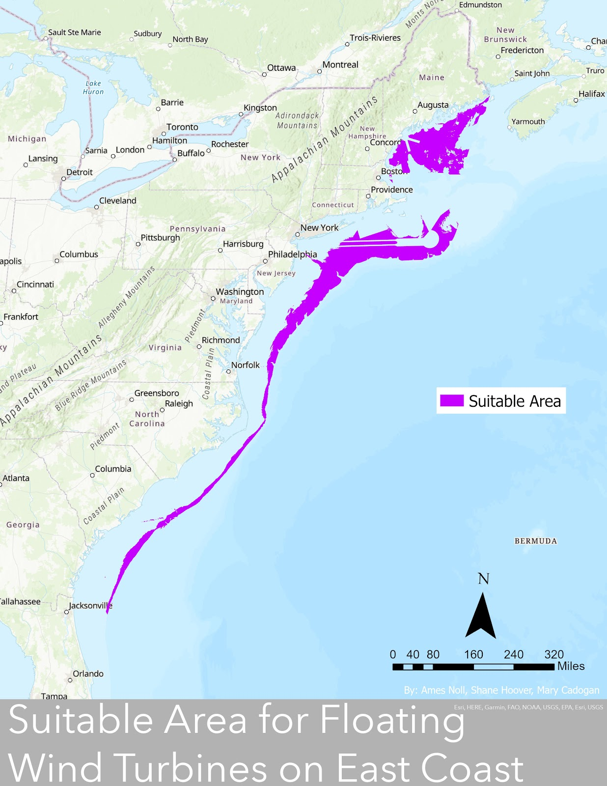
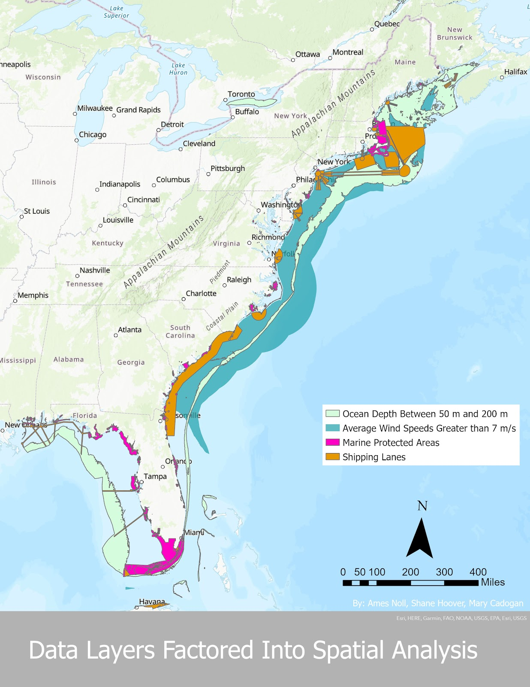

GIS Project
This page includes a group final project I did for a GIS class that looked at Suitable Locations for Offshore Wind Farms on the East Coast
Section 1: Project Summary
Our project looked at potential suitable locations for offshore floating wind farms on the East Coast. As we are increasingly beginning to feel the impacts of anthropogenic climate change, the United States must seek to implement more sources of renewable energy. We still have a heavy reliance on the fossil fuel industry, despite it being a large climate change driver. Eventually its resources will run out and offshore wind farms provide a great source of reliable energy, if implemented strategically. Using ArcGIS to spatially analyze a bunch of different factors together is extremely crucial for determining suitable locations for wind farms. The factors we looked at were wind speed, bathymetry, shipping lanes, and Marine Protected Areas (MPAs). Our approach to finding the most efficient areas was to overlap all these datasets to see where offshore wind farms could exist. For example, they cannot exist in the middle of shipping lanes or MPAs. They must also have optimal wind speeds of greater than 7 m/s (“Offshore Wind Technical Potential: Analysis and Maps”, 2022) and bathymetry of 50 to 200 m (Dvorek et al., 2010). If our country is going to invest into renewable energy implementation it is crucial that this research is done to optimize the amount of energy we can get out of the projects. We decided to look at the East Coast due to its shallower waters and lower tectonic activity. However, as we move forward we will also have to look at locations globally to meet demand.
Section 2: Technical Report
For our project we used a variety of spatial analysis tools to determine suitable locations for floating offshore wind farms within 100 m off the East Coast. Below is a list of the data sets we used for the project:
| Data content | Data file name | Data file format (shapefile, csv, geotiff, jpeg, img, geodatabase, etc.) | Data type (vector point, vector polygon, vector line, raster, data table) | Data source: name of provider (e.g. NASA, USGS, Census, etc) and a link to data website |
| MPAs | NOAA_MPAI_2020_IUCN_gdb.zip | Geodatabase | Vector polygon | NOAA |
| Shipping Lanes | shippinglanes.zip | Shapefile | Vector line | NOAA |
| Wind Speed | NREL_HourlyWind_Atlantic_polysandpoints.zip | Geodatabase | Vector point | BOEM |
| Bathymetry | GEBCO_2022 Grid (sub-ice topo/bathy) |
Geotiff | Raster | GEBCO |
| United States Polygon | s_22mr22.zip | Shapefile | Vector polygon | Weather.gov |
As the data table shows, almost all of the data sets were in a vector format so we had to convert the bathymetry raster data to vector during analysis. The attributes we used from this data are pretty self explanatory based on the data content. We used the United States Polygon layer so that we could select only the East Coast states. We looked at the physical locations of shipping lanes and MPAs to see where wind farms cannot be located. For wind speed and bathymetry, we ended up selecting certain values based on the attributes we needed. We needed areas with wind speeds greater than 7 m/s and depths of 50-200 m. These processes will be explained further in the next paragraph.
The analysis we did resulted in a final area of suitable locations for the offshore wind farms. In order to get from the raw data files to the final output, we had to do a lot of geoprocessing and conversions. We first added the United States polygon layer and then used the Select by Attribute tool to select only the states on the East Coast. We then dissolved the East Coast states into one singular polygon. Since we needed all of the layers to have a North America Lambert Conformal conic projection, we changed the projection for the map, shipping lanes, bathymetry, east coast polygon, and wind speed. We then added a buffer of 100 miles around the East Coast to account for feasible construction and implementation. When we tried to clip the other layers to fit the East Coast buffer, we encountered an error that required us to repair the geometry of the vector layers (all the layers minus bathymetry). After the layers were clipped to fit within the East Coast buffer, we used the Union tool to combine shipping lanes and MPAs to show all areas where wind turbines cannot be located. These were exported into one feature (shipping_lanes_mpas). We then used the Select by Attribute tool to select all areas where average wind speed is greater than 7 m/s. We then used the Raster Calculator tool to select the areas where bathymetry was between 50 m and 200 m and exported this as final_optimal_depth. We then converted this final_optimal_depth layer to vector using the Raster to Polygon tool. When we did this, we had to Select by Attribute (where gridcode is equal to 1) because this was the attribute with values of 50 m to 200 m. Once all layers were selected and in the same format, we used the Intersect tool to combine the optimal_wind and final_optimal_depth_polygon layers to create an optimal_conditions feature. Finally, we used the Erase tool to remove shipping_lanes_mpas from optimal_conditions to get the final area shown in the image.
The final results we got can be explained by the following image:

This image shows the final area where wind speeds were greater than 7 m/s, bathymetry was between 50 and 200 m, and there were no shipping lanes or MPAs present. Therefore, this is where offshore floating wind farms could be located. Looking at this image, it is important to note the location of large cities (such as New York City) and how close they are to potential wind farm areas. It is also important to consider that the East Coast has a large range of seasons, which may impact weather patterns such as wind storms. Further analysis would be required for this. The process we used to achieve this final result can be broken down into the following data layers:

One thing that I think could be added to improve the project is looking at the wind speeds on a greater scale. For example, a location may have an average wind speed of 10 m/s which is above the threshold established to be suitable for wind farms. However, this does not mean wind is consistent. It may be 1 m/s for a significant amount of days and have a few wind storms with very high wind speeds that would skew the average. This would not be suitable for offshore wind farms because we need consistent wind due to inefficient battery technology and wind turbines can also fail in extremely high winds. While this spatial analysis would be a lot more complicated, I think it would be important to look at. Also, to improve the project I think it would be important to include transmission line locations and human populations to track where the energy generated by the wind turbines would be going. It would be more efficient to locate them near larger cities or where transmission lines can handle the input of this new energy source. This would also require analysis on energy storage facilities for the wind turbines. Additionally, our optimal bathymetry depth was based just on requirements for floating wind turbines, not fixed. We also used wind speeds that were optimal for 100 m wind turbines and therefore optimal wind speeds may change as wind turbine height increases.
Through this project I learned how important spatial analysis is and that it is a great tool for solving our world’s biggest challenges. As an Environmental Studies major, I have realized how crucial it is to understand how ArcGIS works. For example, it would be nearly impossible to try to envision suitable locations for projects like this without ArcGIS visually displaying the datasets. I also learned that I have a strong interest in this field, specifically renewable energy implementation.
If I had to do this project again I would add in more data sets, like transmission lines or do more in depth analysis of the criteria. Instead of just creating one area of “suitable areas” I would break it up by not-suitable, suitable, and then ideal. The ideal category would show the best areas, based on the most consistent, highest wind speeds located near populations of high energy demand with transmission lines already in place.